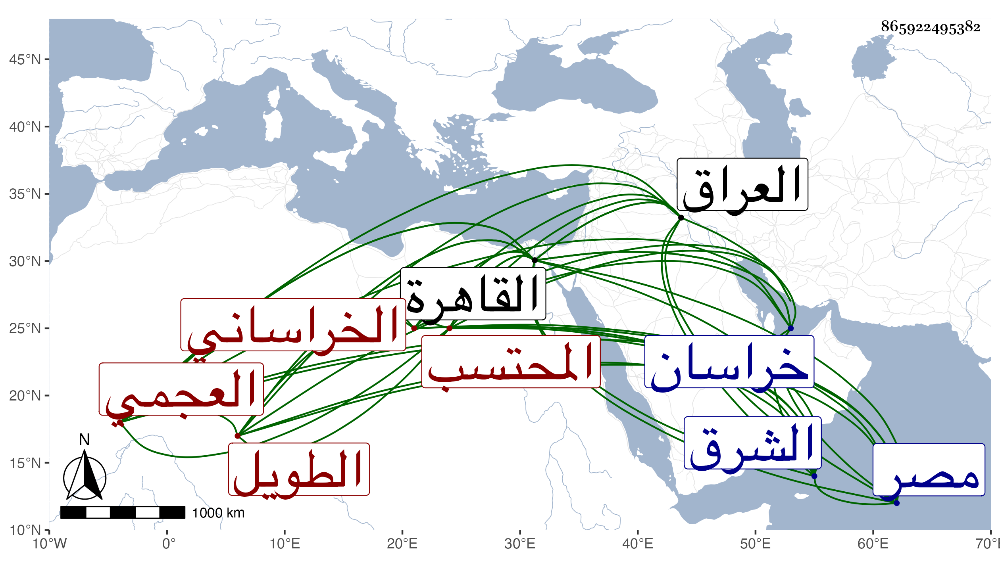

0902Sakhawi.DawLamic.ITO20230111-ara1.EIS1600.865922495382
Biography ID: 865922495382
129
علي بن نصر الله الخراساني العجمي ويعرف بالشيخ علي الطويل ويقال له يار علي المحتسب ، ولد بخراسان في حدود الثمانين وسبعمائة ونشأ بها فكتب المنسوب وتعانى الطلب قليلا ثم خرج منها سائحا على طريقة فقراء العجم المكدين ، وصحب الأتابك سودون من عبد الرحمن لما خرج هاربا من المؤيد وتوجه إلى قرا يوسف بالعراق فلما عاد إلى القاهرة قدم عليه ماشيا من بلاد الشرق وبيده عكاز فأكرمه ونزله في صوفية خانقاه سرياقوس ثم لما بنى مدرسته هناك جعله شيخها وذلك في سنة ست وعشرين فحسن حاله وركب الفرس وتردد إلى الناس وكثر اختلاطه بالظاهر جقمق قبل تسلطنه لكونه وهو أمير آخور كان نظر المدرسة إليه فلما تسلطن زاد تقربه إليه بالهدايا وغيرها فولاه حسبة مصر القديمة ثم بعد مدة حسبة القاهرة عوضا عن العيني وذلك في ربيع الأول سنة خمس وأربعين واستمر فيها مدة يعزل ثم يعاد مع مصادرته وإهانته في كثير من عزلاته وغيرها والأمير ينفيه غير مرة ، وآخر ولاياته في سنة وفاته وقد أحكم في هذه الوظيفة مظالم وتقريرات صار عليه وزرها ووزر من تبعه عليها إلى يوم القيامة ، وابتنى الأملاك الكثيرة بخانقاه سرياقوس وغيرها ، وولي مشيخة الخانقاه وقتا عوضا عن الشهاب بن الأشقر ، وحج في سنة ست وأربعين وكان مفرط الطول أسمر فصبحا بالعجمية والتركية عريا عن الفضائل إلا أنه يعرف طرفا من الكتابة ويكتب عقدا جيدة حتى أنه في مبدأ أمره كتب عقدة فيها الآية الشريفة وانظر إلى حمارك وصور الحمار وقام بعض الناس عليه لذلك وكفره ، ذا همة وقدرة على خدم الأكابر مع التجمل في ملبسه والتعاظم على الفقراء والسوقة مع البطش بهم والطمع في أموالهم . مات معزولا في ذي القعدة سنة اثنتين وستين وهو في عشر التسعين سامحه الله وإيانا .
